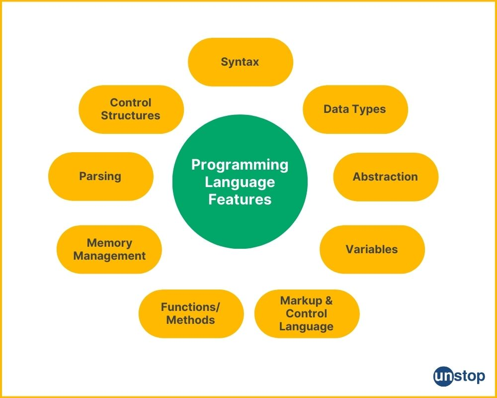
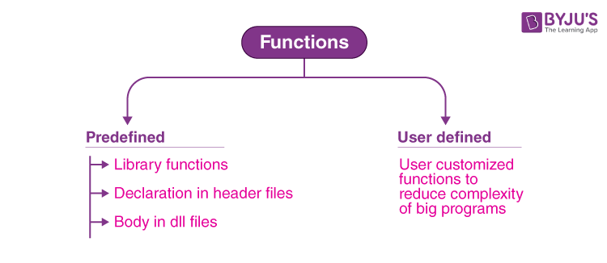

Programming language
Home
- Introduction: Brief overview of the programming language, its purpose, and the documentation's objectives.
- Overview: Summary of the language's main features, history, and design philosophy.
- Features: Highlights the unique features and advantages of using the programming language.
- Audience: Specifies who the documentation is for, such as beginners or experienced developers.

Getting Started
- Introduction: Overview of what users will learn in this section.
- Requirements: Necessary hardware and software requirements.
- Installation Step-by-step installation instructions for various operating systems.
- First Program: Tutorial on writing and executing a basic program.

Basics
- Syntax: Fundamental rules for writing code, including syntax conventions and structure.
- Data Types: Descriptions of primary data types like integers, floats, and strings.
- Variables: How to create variables, assign values, and understand variable scope and lifetime.
- Operators: Overview of arithmetic, comparison, logical, and bitwise operators.
Control
- Conditionals:Using if, else if, else, and switch/case statements to control program flow.
- Loops:Guidelines on using loops (for, while, do-while) for repeated execution of code.
- Break/Continue: How to use break to exit loops and continue to skip to the next iteration.
Functions
- Definition:How to define functions, including syntax and conventions.
- Parameters/Return: How to pass data to functions and return values.
- Scope:The difference between local and global variables and their scopes.
- Recursion: Explanation and examples of functions calling themselves.

Advanced
- OOP:Object-Oriented Programming concepts including classes, objects, inheritance, polymorphism, and encapsulation.
- Exceptions:Methods for managing errors, including try, catch, finally blocks, and custom exceptions.
- File I/O:Reading from and writing to files, with examples.
- Concurrency Managing multiple threads and synchronization techniques.
- Memory:Understanding dynamic memory allocation and garbage collection.
Library
- Overview: Introduction to the language's standard library and its purpose.
- Modules: Descriptions of frequently used modules or packages.
- Examples:Practical examples demonstrating how to use standard library functions.
Best Practices
- Coding Standards:Guidelines for writing clean, readable, and maintainable code.
- Formatting: Recommendations for consistent code formatting.
- Performance:Techniques for improving code performance.
- Security: Best practices for writing secure code.
API
- Introduction: Overview of the API, its purpose, and usage.
- Authentication: Managing authentication and authorization for API access.
- Endpoints:Comprehensive information on each API endpoint, including parameters, request/response examples, and error handling.
- Functions: Documentation of built-in and standard library functions.
Examples
- Basic:Simple examples to illustrate fundamental concepts.
- Intermediate:Examples showcasing more advanced features and usage patterns.
- Advanced:Complex examples demonstrating best practices and advanced usage scenarios
Community
- Resources: Links to forums, chat groups, and other community resources.
- Contributions: Instructions for contributing to the project's development and documentation, including coding standards and submitting issues/pull requests.
FAQ
- Common Questions:Answers to frequently asked questions to help users quickly find solutions to common problems.
Glossary
- Terms: Clear explanations of key terms and acronyms used throughout the documentation.
- Links: Cross-references to other sections for more in-depth information.